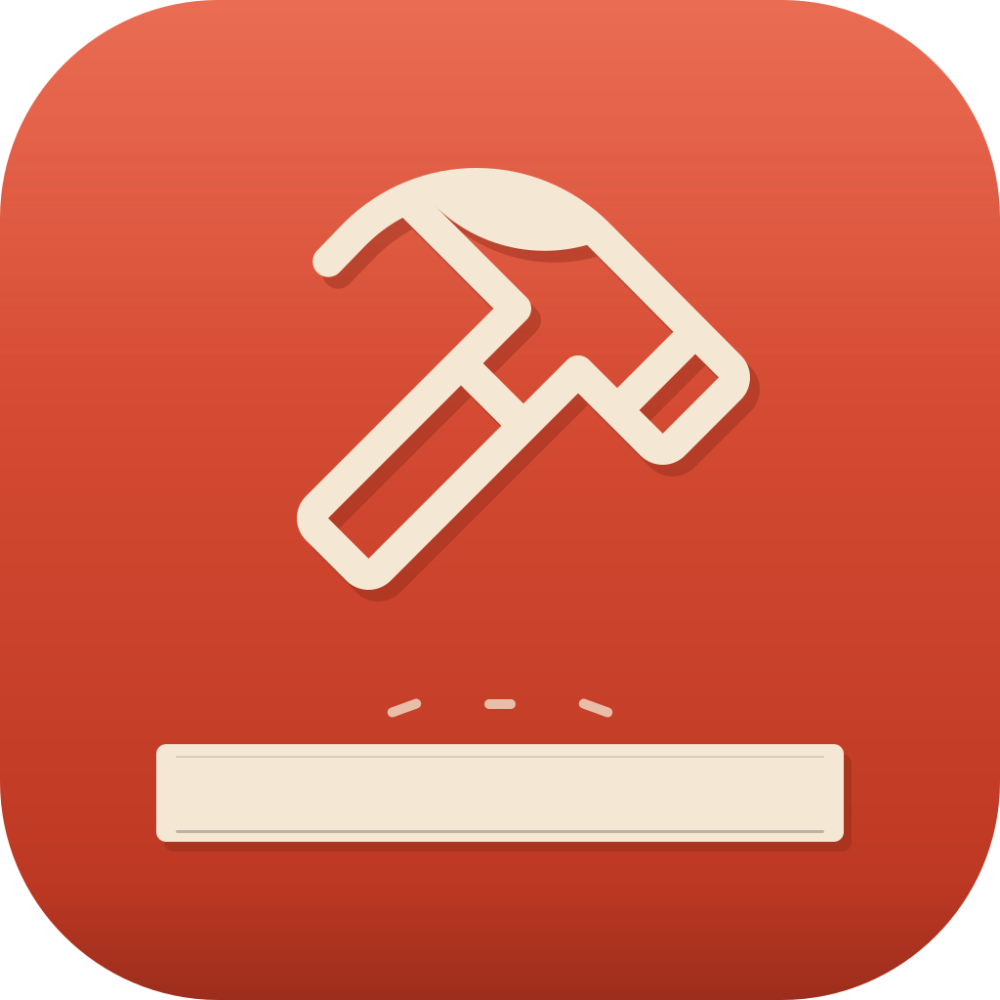

A native, offline, lightweight API client built with Rust and egui —
a Postman alternative that doesn't chew through hundreds of MB of RAM
just to send HTTP requests, run collections, and inspect responses.
curl -fsSL https://raw.githubusercontent.com/chud-lori/rusty-requester/main/install.sh | bash
Most API clients today are Electron apps — Chromium + Node wrapped around a form builder. That buys cross-platform consistency at the cost of hundreds of MB of RAM and a supply chain of thousands of npm packages. Rusty Requester is a single ~15 MB native binary: Rust + egui, no webview, no Node, no account.
Plenty of developers are on older / low-spec machines that can't stomach a 500 MB Electron app idling at half a gig of RAM. This is built for them first — that's what the "Rusty" name encodes.
| Postman | Insomnia | Bruno | Rusty Requester | |
|---|---|---|---|---|
| Runtime | Electron | Electron | Electron | Rust + egui (native) |
| Download size | ~500 MB | ~200 MB | ~200 MB | ~15 MB |
| Idle RAM | 400–800 MB | 300–500 MB | 200–400 MB | ~30 MB |
| Cold start | 2–5 s | 1–3 s | 1–2 s | <100 ms |
| Account required | yes | yes (since 2023) | no | no |
| Telemetry | yes | yes | off by default | none |
| Storage | cloud-first | cloud or local | git-native files | one local JSON |
| Supply chain | ~1000+ npm | ~1000+ npm | ~800 npm | ~150 Rust crates |
Bruno is the closest match in spirit (offline, file-based, OSS) — it's a good product. The differentiator is runtime: it still ships Chromium.
Multiple in-flight requests, drag to reorder, double-click to rename, pin tabs that survive restart.
Per-environment substitution in URL, headers, body, auth. Cookie jar persists across runs.
Syntax-highlighted JSON with Postman-style fold chevrons on every { / [. Server-Sent Events streaming for LLM APIs.
Run all collections or a selected folder with optional CSV/JSON data rows, live progress, saved presets, detail drilldowns, assertions, extractors, and safe reports.
Paste any curl command — method, headers, body, auth, cookies parse automatically. Including bash ANSI-C quoting ($'…').
Compare current send against any previous response of the same request. Highlights additions, deletions, and value changes.
Switch Dark, Light, or Postman in Settings and preview the full app immediately before saving or cancelling the change.
Fuzzy-find any request across all collections, or run any action by name. Use Cmd on macOS and Ctrl on Linux/Windows.
When a new version ships, click Update now. The installer runs in the background, the app relaunches itself.
Redacted cURL and code snippets preserve request shape while masking obvious auth, cookie, query, and body secrets. Raw copy stays explicit.
Link a collection to a Git repo, review readable .rr request files, inspect status/diff, pull, commit, and push through local Git credentials. Private repos work without storing provider tokens.
An API client lives on a trust boundary — you type a URL, a stranger's server sends bytes back. The headline guarantees:
<script> tags display as text.reqwest / hyper / rustls, all safe Rust.exec'd.Full threat model in SECURITY.md.
One command on macOS or Linux:
curl -fsSL https://raw.githubusercontent.com/chud-lori/rusty-requester/main/install.sh | bash
/Applications, strips Gatekeeper quarantine, registers with Launch Services.~/.local/bin, drops a .desktop entry. No sudo.git clone + cargo build --release. Requires Rust 1.73+.UNINSTALL=1 prepended. Add PURGE=1 to wipe data too.